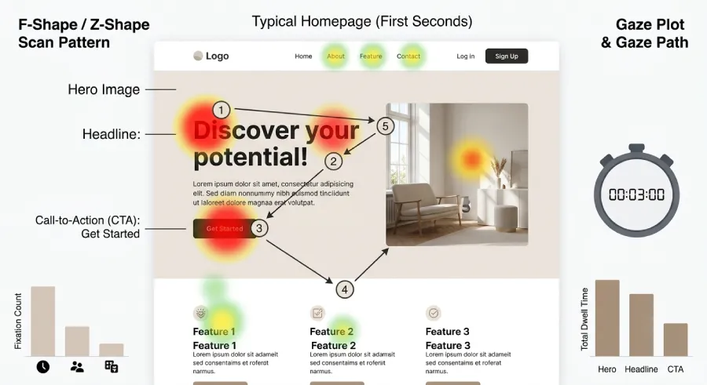

Someone lands on your website. They don't read. They don't think, at least not consciously. They look.
And within about 3 seconds, before they've had time to understand what you actually do, their mind has already reached a first verdict: stay, or leave. That's true whether you're an attorney, a personal trainer, a real estate agent, a villa owner renting out a property, or any professional whose business depends on strangers deciding to trust you.
This isn't a matter of the visitor's patience. It's a matter of how perception works. And once you understand it, it changes how you think about every part of your website.
What Actually Happens in Those 3 Seconds
The human brain doesn't evaluate a website logically. It forms a feeling first, then looks for evidence to justify it. That's not a marketing theory, it's simply how perception works. The eye scans, it doesn't read. It picks up shapes, color, white space, loading speed, and a first phrase, if it gets that far.
If what it picks up feels clear, the visitor relaxes and keeps going. If it feels confusing, slow, or generic, what's left is hesitation. And hesitation toward an unfamiliar professional leads to exactly one action: close the tab and move to the next name on the list.
It doesn't matter how good you actually are at your job. If that doesn't come through in the first 3 seconds, the visitor won't stay long enough to find out.
Why This Holds True Across Every Field
There's a common misconception that this rule only applies to e-commerce or big consumer brands. In reality, it applies even more strongly to independent professionals, because for the visitor, the stakes feel personal.
Someone searching for an attorney isn't just looking for a service. They're looking for someone to trust with a difficult situation. Someone searching for a personal trainer doesn't just want a program, they want to feel understood. Someone browsing villas for their vacation decides within seconds whether the owner feels legitimate, or whether it's just another generic listing.
In every one of these cases, your website isn't a brochure. It's the first piece of evidence that you're the right person for the job. And that evidence is either delivered in the first few seconds, or it isn't delivered at all.
The 4 Things Judged at First Glance
Not the whole site gets judged. A specific handful of things do, and in a specific order.
1. Speed
Before anything gets read, it has to load. A site that takes even two extra seconds has already lost a meaningful share of visitors, especially on mobile. Speed isn't a technical detail for developers to worry about. It's the very first point of contact with your future client, before they've even seen your name.

2. The First Message
The first thing a visitor reads, if they read anything, needs to answer one question: what you do, who it's for, and why they should care. Not a list of services, not a vague line like "quality solutions for every need." If the visitor has to think in order to understand what you do, you've already lost.
3. One Clear Next Step
Even if the visitor is convinced within those first 3 seconds, they need to know what to do next. A button that's visually distinct, with copy that shows exactly what will happen, not a faded "Contact" link buried in a menu somewhere.
4. The Mobile Experience
Most first visits happen on a phone, not a desktop. If your site only looks right on a computer, it's effectively showing the wrong first impression to most of the people meeting you for the very first time.
The Most Common Mistake
The most frequent problem isn't aesthetics. It's vagueness. Many professionals build websites that speak in general terms, worried that being specific might exclude someone.
The result is the opposite of what they intended. A website that tries to speak to everyone ends up speaking clearly to no one. The visitor doesn't feel like the message was written for them, and moves on to the next option.
Clarity doesn't push clients away. It filters them correctly, and it makes the right client feel like they finally found what they were looking for.
How to Build a Site That Passes the Test
None of this requires a complete overhaul. It requires the right priorities.
Start by designing for mobile first, not desktop. The very first thing a visitor sees above the fold needs to answer what you do and who it's for, in plain language, not in impressive-sounding adjectives with no real content behind them. A call-to-action button needs to be visible without scrolling, with copy that names the next step instead of something generic. And every technical detail, from load time to how the page behaves on a small screen, gets treated as part of the first impression, not as something to patch later.
The same website can have excellent content further down the page: detailed service pages, testimonials, everything a visitor could need. None of it matters if the visitor never makes it that far.
The Bottom Line
Those 3 seconds aren't an arbitrary design detail. They're the reality of how people make decisions online, whether we like it or not.
A professional can have years of experience, an excellent reputation, and real talent at what they do. But if their website doesn't make that clear within the first few seconds, the next client will never find out. They'll find the competitor whose website made it obvious instead.
The question isn't whether your website is good. It's whether it makes the right first impression before the visitor even has time to think about it.
Ready to build a website that passes the 3-second test?
At Evida Studio, we build websites for independent professionals with speed, clarity, and results built in from the start.
Let's Talk About Your Project